Lab 5: Machine Learning in Hydrology
Using Tidymodels & CAMELS Data
Introduction
In this lab, we will explore predictive modeling in hydrology using the tidymodels framework and the CAMELS (Catchment Attributes and Meteorology for Large-sample Studies) dataset.
What’s in the data?
Each record in the CAMELS dataset represents a unique river basin, identified by an outlet USGS NWIS gauge_id. The dataset contains a mix of continuous and categorical variables, including meteorological, catchment, and streamflow summaries.
The data we are going to download are the basin-level summaries. For example, if we looked at row 1 of the data (Gage: 01013500), all of the attribute values are areal averages over the drainage basin shown below, while the flow metrics are associated with the outlet gage (in red). We can use dataRetrieval::findNLDI() to fetch the basin polygon and upstream flowlines:
# Use the `findNLDI` function to get the basin and flowlines for the first gauge
basin <- dataRetrieval::findNLDI(nwis = "01013500",
# Navigate the "upper tributaries" of the basin
nav = "UT",
# Return the basin and flowlines
find = c("basin", "flowlines"))
# Plot the basin, flowlines, and gauge ...
ggplot() +
geom_sf(data = basin$basin, fill = "lightblue") +
geom_sf(data = basin$UT_flowlines, color = "blue") +
geom_sf(data = basin$origin, color = "red") +
theme_minimal()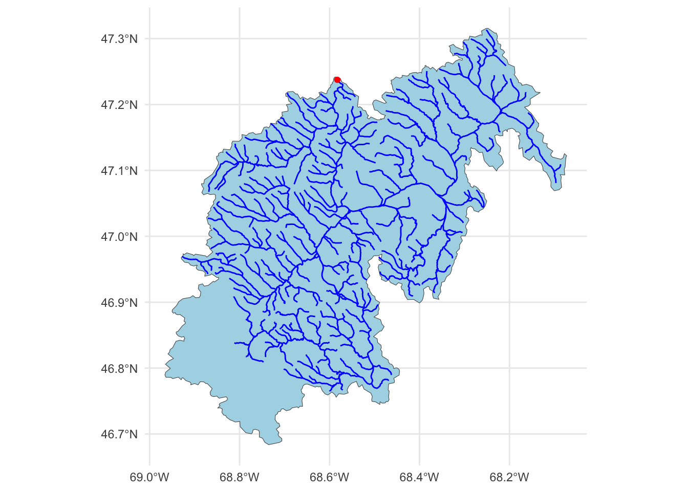
Lab Goals
This lab’s worked example grounds the minimum tidymodels pipeline — split, recipe, workflow, fit, evaluate. Q3 and Q4 then ask you to extend that foundation with everything taught in the lectures.
By the end of the lab you will have:
- Programmatically downloaded CAMELS data and joined basin-level attribute files into a modeling-ready frame.
- Specified a
recipe, dropped it into aworkflow, and compared multiple models viaworkflow_setagainst cross-validated resamples (Week 5-1). - Extracted variable importance and interpreted predictor ranks through the geographic-proxy lens (Week 5-2).
- Evaluated with spatial cross-validation and reported the honest gap between random and spatial CV (Week 5-2).
- Tuned hyperparameters with
tune_grid()and a named grid, then finalized withlast_fit()(Week 6-1). - Produced a deployed Quarto page communicating the full pipeline.
Let’s start by loading the necessary libraries for this lab (you may need to install some!):
library(tidyverse)
library(tidymodels)
library(powerjoin)
library(glue)
library(vip)
library(baguette)Data Download
The CAMELS dataset is archived on Zenodo. Scroll down to the file listing — you will see a set of .txt files (climate, geology, soil, topography, vegetation, hydrology summaries per basin), along with a PDF describing every column. Each file has a direct-download link of the form https://zenodo.org/records/15529996/files/<filename>?download=1.
We will point all of our downloads at that root:
root <- 'https://zenodo.org/records/15529996/files'Getting the documentation PDF
We can download the documentation PDF which provides descriptions for the various columns (many are not self-explanatory). We use download.file to pull it into our data/ directory — binary files like PDFs need mode = "wb" on Windows.
download.file('https://zenodo.org/records/15529996/files/camels_attributes_v2.0.pdf?download=1',
'../data/camels_attributes_v2.0.pdf',
mode = 'wb')Getting Basin characteristics
Now we want to download the .txt files that store the actual data documented in the PDF. Doing this file by file (like we did with the PDF) is possible, but lets look at a better/easier way…
- Lets create a vector storing the data types/file names we want to download:
types <- c("clim", "geol", "soil", "topo", "vege", "hydro")
glue
The glue package provides an efficient way to interpolate and manipulate strings. It is particularly useful for dynamically constructing text, formatting outputs, and embedding R expressions within strings.
Key Features of glue:
- String Interpolation: Embed R expressions inside strings using
{}. - Improved Readability: Eliminates the need for cumbersome
paste(),paste0()andsprintf()commands. - Multi-line Strings: Easily handle multi-line text formatting.
- Safe and Efficient: Optimized for performance and readability.
Basic Usage
- To use
glue, you need to load the package and then call theglue()function with the desired string template. You can embed R expressions within curly braces{}to interpolate values into the string.
class <- "ESS 330"
year <- 2024
glue("We are taking {class} together in {year}")We are taking ESS 330 together in 2024Multiples
- You can also use glue to interpolate multiple values at once
classes <- c("ESS 330", "ESS 523c")
glue("We are taking {classes} together in {year}")We are taking ESS 330 together in 2024
We are taking ESS 523c together in 2024- Using
glue, we can construct the needed URLs and file names for the data we want to download. Zenodo direct-download links end with?download=1, so we append that to the remote URL but keep the local filename clean:
# Where the files live online ...
remote_files <- glue('{root}/camels_{types}.txt?download=1')
# where we want to download the data ...
local_files <- glue('data/camels_{types}.txt')- Now we can download the data:
walk2comes from thepurrrpackage and is used to apply a function to multiple arguments in parallel (much likemap2works over paired lists). Here, we are askingwalk2to pass the first element ofremote_filesand the first element oflocal_filesto thedownload.filefunction to download the data, and settingquiet = TRUEto suppress output. The process is then iterated for the second element of each vector, and so on.
walk2(remote_files, local_files, download.file, quiet = TRUE)- Once downloaded, the data can be read it into R using
readr::read_delim(), again instead of applying this to each file individually, we can usemapto apply the function to each element of thelocal_fileslist.
# Read and merge data
camels <- map(local_files, read_delim, show_col_types = FALSE) - This gives us a list of data.frames, one for each file that we want to merge into a single table. So far in class we have focused on *_join functions to merge data based on a primary and foreign key relationship.
In this current list, we have >2 tables, but, have a shared column called gauge_id that we can use to merge the data. However, since we have more then a left and right hand table, we need a more robust tool. We will use the powerjoin package to merge the data into a single data frame. powerjoin is a flexible package for joining lists of data.frames. It provides a wide range of join types, including inner, left, right, full, semi, anti, and cross joins making it a versatile tool for data manipulation and analysis, and one that should feel familiar to users of dplyr.
In this case, we are join to merge every data.frame in the list (n = 6) by the shared gauge_id column. Since we want to keep all data, we want a full join.
camels <- power_full_join(camels ,by = 'gauge_id')
Note
Alternatively, we could have read straight form the urls. Strongly consider the implications of this approach as the longevity and persistence of the data is not guaranteed.
# Read and merge data
camels <- map(remote_files, read_delim, show_col_types = FALSE) |>
power_full_join(by = 'gauge_id')Question 1: Your Turn
Exploratory Data Analysis
First, lets make a map of the sites. Use the borders() ggplot function to add state boundaries to the map and initially color the points by the mean flow (q_mean) at each site.
ggplot(data = camels, aes(x = gauge_lon, y = gauge_lat)) +
borders("state", colour = "gray50") +
geom_point(aes(color = q_mean)) +
scale_color_gradient(low = "pink", high = "dodgerblue") +
ggthemes::theme_map()
Question 2: Your Turn
Model Preparation
As an initial analysis, lets look at the relationship between aridity, rainfall and mean flow. First, lets make sure there is not significant correlation between these variables. Here, we make sure to drop NAs and only view the 3 columns of interest.
camels |>
select(aridity, p_mean, q_mean) |>
drop_na() |>
cor() aridity p_mean q_mean
aridity 1.0000000 -0.7550090 -0.5817771
p_mean -0.7550090 1.0000000 0.8865757
q_mean -0.5817771 0.8865757 1.0000000As expected, there is a strong correlation between rainfall and mean flow, and an inverse correlation between aridity and rainfall. While both are high, we are going to see if we can build a model to predict mean flow using aridity and rainfall.
Visual EDA
- Lets start by looking that the 3 dimensions (variables) of this data. We’ll start with a XY plot of aridity and rainfall. We are going to use the
scale_color_viridis_c()function to color the points by theq_meancolumn. This scale functions maps the color of the points to the values in theq_meancolumn along the viridis continuous (c) palette. Because ascale_color_*function is applied, it maps to the known color aesthetic in the plot.
# Create a scatter plot of aridity vs rainfall
ggplot(camels, aes(x = aridity, y = p_mean)) +
# Add points colored by mean flow
geom_point(aes(color = q_mean)) +
# Add a linear regression line
geom_smooth(method = "lm", color = "red", linetype = 2) +
# Apply the viridis color scale
scale_color_viridis_c() +
# Add a title, axis labels, and theme (w/ legend on the bottom)
theme_linedraw() +
theme(legend.position = "bottom") +
labs(title = "Aridity vs Rainfall vs Runoff",
x = "Aridity",
y = "Rainfall",
color = "Mean Flow")`geom_smooth()` using formula = 'y ~ x'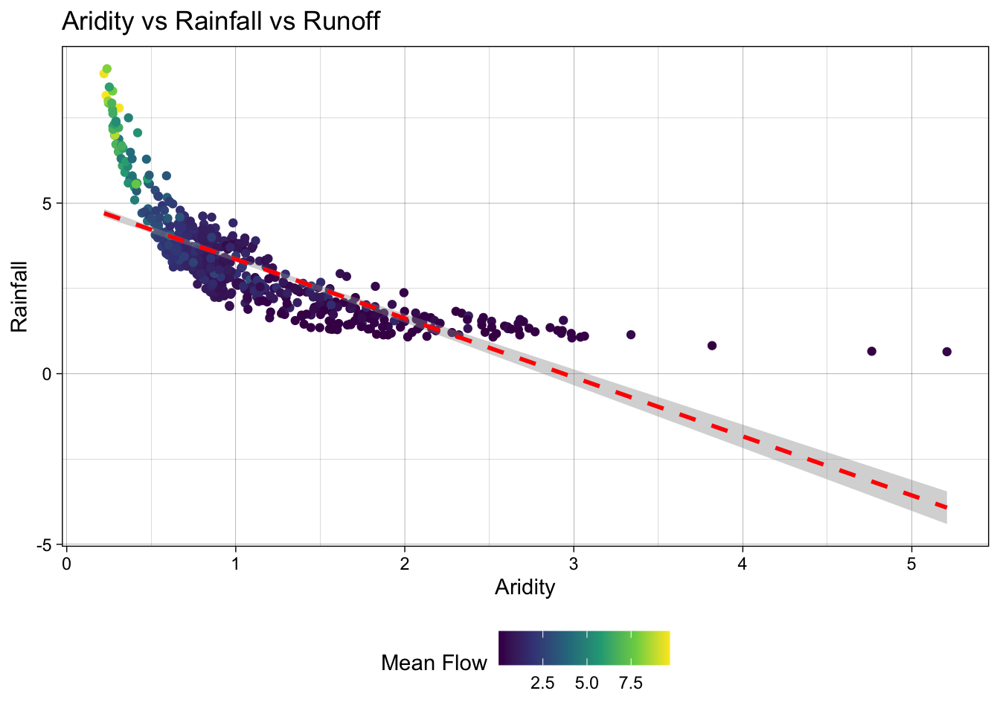
Ok! so it looks like there is a relationship between rainfall, aridity, and rainfall but it looks like an exponential decay function and is certainly not linear.
To test a transformation, we can log transform the x and y axes using the scale_x_log10() and scale_y_log10() functions:
ggplot(camels, aes(x = aridity, y = p_mean)) +
geom_point(aes(color = q_mean)) +
geom_smooth(method = "lm") +
scale_color_viridis_c() +
# Apply log transformations to the x and y axes
scale_x_log10() +
scale_y_log10() +
theme_linedraw() +
theme(legend.position = "bottom") +
labs(title = "Aridity vs Rainfall vs Runoff",
x = "Aridity",
y = "Rainfall",
color = "Mean Flow")`geom_smooth()` using formula = 'y ~ x'
Great! We can see a log-log relationship between aridity and rainfall provides a more linear relationship. This is a common relationship in hydrology and is often used to estimate rainfall in ungauged basins. However, once the data is transformed, the lack of spread in the streamflow data is quite evident with high mean flow values being compressed to the low end of aridity/high end of rainfall.
To address this, we can visualize how a log transform may benefit the q_mean data as well. Since the data is represented by color, rather than an axis, we can use the trans (transform) argument in the scale_color_viridis_c() function to log transform the color scale.
ggplot(camels, aes(x = aridity, y = p_mean)) +
geom_point(aes(color = q_mean)) +
geom_smooth(method = "lm") +
# Apply a log transformation to the color scale
scale_color_viridis_c(trans = "log") +
scale_x_log10() +
scale_y_log10() +
theme_linedraw() +
theme(legend.position = "bottom",
# Expand the legend width ...
legend.key.width = unit(2.5, "cm"),
legend.key.height = unit(.5, "cm")) +
labs(title = "Aridity vs Rainfall vs Runoff",
x = "Aridity",
y = "Rainfall",
color = "Mean Flow")`geom_smooth()` using formula = 'y ~ x'
Excellent! Treating these three right skewed variables as log transformed, we can see a more evenly spread relationship between aridity, rainfall, and mean flow. This is a good sign for building a model to predict mean flow using aridity and rainfall.
Model Building
Lets start by splitting the data
First, we set a seed for reproducibility, then transform the q_mean column to a log scale. Remember it is error prone to apply transformations to the outcome variable within a recipe. So, we’ll do it a priori.
Once set, we can split the data into a training and testing set. We are going to use 80% of the data for training and 20% for testing. We are leaving stratification off in this minimal example, but as Week 5-1 covered, stratified splits often matter when the outcome has structure — you’ll revisit this choice in Q4.
Additionally, we are going to create a 10-fold cross validation dataset to help us evaluate multi-model setups.
set.seed(123)
# Bad form to perform simple transformations on the outcome variable within a
# recipe. So, we'll do it here.
camels <- camels |>
mutate(logQmean = log(q_mean))
# Generate the split
camels_split <- initial_split(camels, prop = 0.8)
camels_train <- training(camels_split)
camels_test <- testing(camels_split)
camels_cv <- vfold_cv(camels_train, v = 10)Preprocessor: recipe
In Week 5-1 we saw how a recipe lets us declare a preprocessing pipeline once, estimate its parameters on the training data, and reuse it everywhere — folds, test set, new predictions.
We learned quite a lot about the data in the visual EDA. We know that the q_mean, aridity, and p_mean columns are right skewed and can be helped by log transformations. We also know that the relationship between aridity and p_mean is non-linear and can be helped by adding an interaction term. Let’s build a small recipe that encodes those decisions (your Q4 recipe will be bigger):
# Create a recipe to preprocess the data
rec <- recipe(logQmean ~ aridity + p_mean, data = camels_train) %>%
# Log transform the predictor variables (aridity and p_mean)
step_log(all_predictors()) %>%
# Add an interaction term between aridity and p_mean
step_interact(terms = ~ aridity:p_mean) |>
# Drop any rows with missing values in the pred
step_naomit(all_predictors(), all_outcomes())Naive base lm approach:
Ok, to start, lets do what we are comfortable with … fitting a linear model to the data. First, we use prep and bake on the training data to apply the recipe. Then, we fit a linear model to the data.
# Prepare the data
baked_data <- prep(rec, camels_train) |>
bake(new_data = NULL)
# Interaction with lm
# Base lm sets interaction terms with the * symbol
lm_base <- lm(logQmean ~ aridity * p_mean, data = baked_data)
summary(lm_base)
Call:
lm(formula = logQmean ~ aridity * p_mean, data = baked_data)
Residuals:
Min 1Q Median 3Q Max
-2.91162 -0.21601 -0.00716 0.21230 2.85706
Coefficients:
Estimate Std. Error t value Pr(>|t|)
(Intercept) -1.77586 0.16365 -10.852 < 2e-16 ***
aridity -0.88397 0.16145 -5.475 6.75e-08 ***
p_mean 1.48438 0.15511 9.570 < 2e-16 ***
aridity:p_mean 0.10484 0.07198 1.457 0.146
---
Signif. codes: 0 '***' 0.001 '**' 0.01 '*' 0.05 '.' 0.1 ' ' 1
Residual standard error: 0.5696 on 531 degrees of freedom
Multiple R-squared: 0.7697, Adjusted R-squared: 0.7684
F-statistic: 591.6 on 3 and 531 DF, p-value: < 2.2e-16# Sanity Interaction term from recipe ... these should be equal!!
summary(lm(logQmean ~ aridity + p_mean + aridity_x_p_mean, data = baked_data))
Call:
lm(formula = logQmean ~ aridity + p_mean + aridity_x_p_mean,
data = baked_data)
Residuals:
Min 1Q Median 3Q Max
-2.91162 -0.21601 -0.00716 0.21230 2.85706
Coefficients:
Estimate Std. Error t value Pr(>|t|)
(Intercept) -1.77586 0.16365 -10.852 < 2e-16 ***
aridity -0.88397 0.16145 -5.475 6.75e-08 ***
p_mean 1.48438 0.15511 9.570 < 2e-16 ***
aridity_x_p_mean 0.10484 0.07198 1.457 0.146
---
Signif. codes: 0 '***' 0.001 '**' 0.01 '*' 0.05 '.' 0.1 ' ' 1
Residual standard error: 0.5696 on 531 degrees of freedom
Multiple R-squared: 0.7697, Adjusted R-squared: 0.7684
F-statistic: 591.6 on 3 and 531 DF, p-value: < 2.2e-16Wrong version 1: augment
The broom package provides a convenient way to extract model predictions and residuals. We can use the augment function to add predicted values to the test data. However, if we use augment directly on the test data, we will get incorrect results because the preprocessing steps defined in the recipe object have not been applied to the test data.
nrow(camels_test)[1] 135nrow(camels_train)[1] 536broom::augment(lm_base, data = camels_test)Error in `$<-`:
! Assigned data `unname(predict(x, na.action = na.pass, ...))` must be
compatible with existing data.
✖ Existing data has 135 rows.
✖ Assigned data has 535 rows.
ℹ Only vectors of size 1 are recycled.
Caused by error in `vectbl_recycle_rhs_rows()`:
! Can't recycle input of size 535 to size 135.Wrong version 2: predict
The predict function can be used to make predictions on new data. However, if we use predict directly on the test data, we will get incorrect results because the preprocessing steps defined in the recipe object have not been applied to the test data.
camels_test$p2 = predict(lm_base, newdata = camels_test)
## Scales way off!
ggplot(camels_test, aes(x = p2, y = logQmean)) +
geom_point() +
# Linear fit line, no error bands
geom_smooth(method = "lm", se = FALSE, linewidth = 1) +
# 1:1 line
geom_abline(color = "red", linewidth = 1) +
labs(title = "Linear Model Using `predict()`",
x = "Predicted Log Mean Flow",
y = "Observed Log Mean Flow") +
theme_linedraw()`geom_smooth()` using formula = 'y ~ x'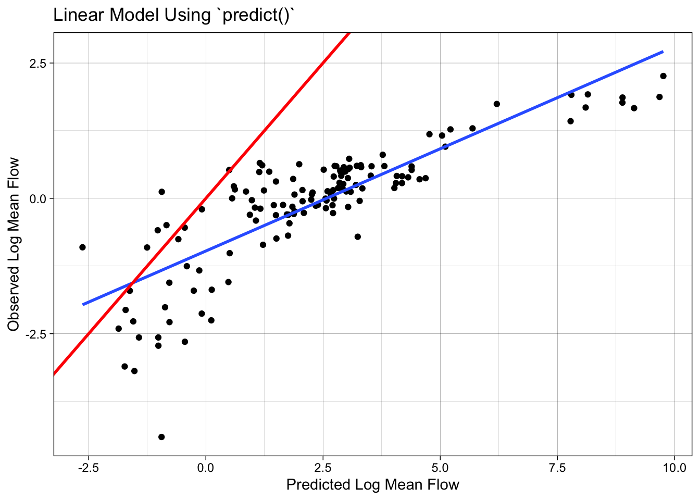
Correct version: prep -> bake -> predict
To correctly evaluate the model on the test data, we need to apply the same preprocessing steps to the test data that we applied to the training data. We can do this using the prep and bake functions with the recipe object. This ensures the test data is transformed in the same way as the training data before making predictions.
test_data <- bake(prep(rec), new_data = camels_test)
test_data$lm_pred <- predict(lm_base, newdata = test_data)Model Evaluation: statistical and visual
Now that we have the predicted values, we can evaluate the model using the metrics function from the yardstick package. This function calculates common regression metrics such as RMSE, R-squared, and MAE between the observed and predicted values.
metrics(test_data, truth = logQmean, estimate = lm_pred)# A tibble: 3 × 3
.metric .estimator .estimate
<chr> <chr> <dbl>
1 rmse standard 0.583
2 rsq standard 0.742
3 mae standard 0.390ggplot(test_data, aes(x = logQmean, y = lm_pred, colour = aridity)) +
# Apply a gradient color scale
scale_color_gradient2(low = "brown", mid = "orange", high = "darkgreen") +
geom_point() +
geom_abline(linetype = 2) +
theme_linedraw() +
labs(title = "Linear Model: Observed vs Predicted",
x = "Observed Log Mean Flow",
y = "Predicted Log Mean Flow",
color = "Aridity")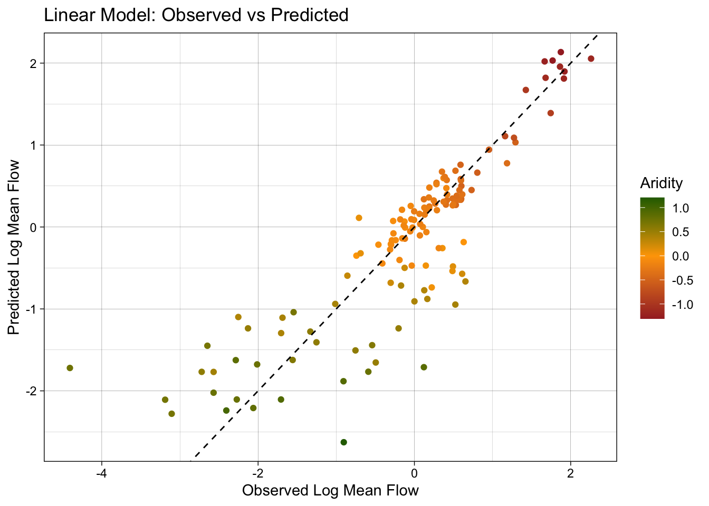
Using a workflow instead
tidymodels provides a framework for building and evaluating models using a consistent and modular workflow. The workflows package lets you bundle a preprocessor (recipe or formula) and a model spec into a single object, then fit them together. This makes it easier to experiment with different models, compare performance, and ensure reproducibility.
Here, we use linear_reg() to define a linear regression model, set the engine to lm, and the mode to regression. We then add our recipe to the workflow, fit the model to the training data, and extract the coefficients.
# Define model
lm_model <- linear_reg() %>%
# define the engine
set_engine("lm") %>%
# define the mode
set_mode("regression")
# Instantiate a workflow ...
lm_wf <- workflow() %>%
# Add the recipe
add_recipe(rec) %>%
# Add the model
add_model(lm_model) %>%
# Fit the model to the training data
fit(data = camels_train)
# Extract the model coefficients from the workflow
summary(extract_fit_engine(lm_wf))$coefficients Estimate Std. Error t value Pr(>|t|)
(Intercept) -1.7758557 0.16364755 -10.851710 6.463654e-25
aridity -0.8839738 0.16144589 -5.475357 6.745512e-08
p_mean 1.4843771 0.15511117 9.569762 4.022500e-20
aridity_x_p_mean 0.1048449 0.07198145 1.456555 1.458304e-01Lets ensure we replicated the results from the lm_base model. How do they look to you?
# From the base implementation
summary(lm_base)$coefficients Estimate Std. Error t value Pr(>|t|)
(Intercept) -1.7758557 0.16364755 -10.851710 6.463654e-25
aridity -0.8839738 0.16144589 -5.475357 6.745512e-08
p_mean 1.4843771 0.15511117 9.569762 4.022500e-20
aridity:p_mean 0.1048449 0.07198145 1.456555 1.458304e-01Making Predictions
Now that lm_wf is a workflow, data is not embedded in the model, we can use augment with the new_data argument to make predictions on the test data.
#
lm_data <- augment(lm_wf, new_data = camels_test)
dim(lm_data)[1] 135 62Model Evaluation: statistical and visual
As with EDA, graphical and statistical evaluation of the model is key. Here, we use the metrics function to extract the default regression metrics (rmse, rsq, mae) between the observed and predicted mean streamflow values.
We then create a scatter plot of the observed vs predicted values, colored by aridity, to visualize the model performance.
metrics(lm_data, truth = logQmean, estimate = .pred)# A tibble: 3 × 3
.metric .estimator .estimate
<chr> <chr> <dbl>
1 rmse standard 0.583
2 rsq standard 0.742
3 mae standard 0.390ggplot(lm_data, aes(x = logQmean, y = .pred, colour = aridity)) +
scale_color_viridis_c() +
geom_point() +
geom_abline() +
theme_linedraw()
Switch it up!
The real power of this approach is that we can easily switch out the models/recipes and see how it performs. Here, we are going to instead use a random forest model to predict mean streamflow. We define a random forest model using the rand_forest function, set the engine to ranger, and the mode to regression. We then add the recipe, fit the model, and evaluate the skill.
#install.packages("ranger")
library(ranger)
library(baguette)
rf_model <- rand_forest() %>%
set_engine("ranger", importance = "impurity") %>%
set_mode("regression")
rf_wf <- workflow() %>%
# Add the recipe
add_recipe(rec) %>%
# Add the model
add_model(rf_model) %>%
# Fit the model
fit(data = camels_train) Predictions
- Make predictions on the test data using the
augmentfunction and thenew_dataargument.
rf_data <- augment(rf_wf, new_data = camels_test)
dim(rf_data)[1] 135 61Model Evaluation: statistical and visual
Evaluate the model using the metrics function and create a scatter plot of the observed vs predicted values, colored by aridity.
metrics(rf_data, truth = logQmean, estimate = .pred)# A tibble: 3 × 3
.metric .estimator .estimate
<chr> <chr> <dbl>
1 rmse standard 0.587
2 rsq standard 0.741
3 mae standard 0.363ggplot(rf_data, aes(x = logQmean, y = .pred, colour = aridity)) +
scale_color_viridis_c() +
geom_point() +
geom_abline() +
theme_linedraw()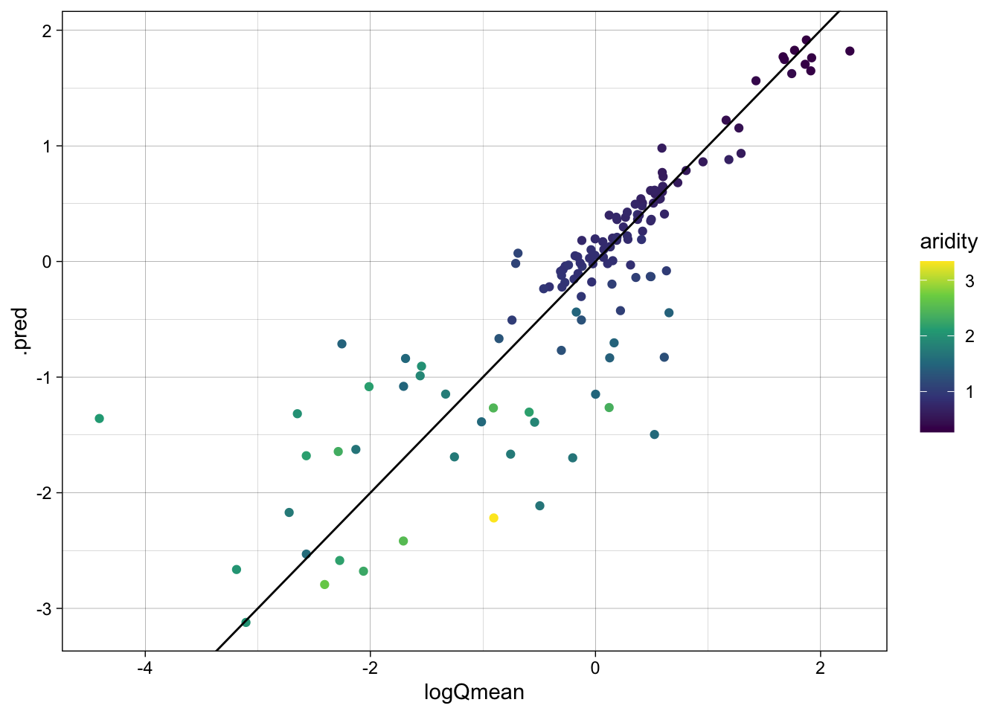
Awesome! We just set up a completely new model and were able to utilize all of the things we had done for the linear model. This is the power of the tidymodels framework!
That said, we still have some repetition — and, more importantly, we are eyeballing metrics on a single train/test split rather than comparing the two models head-to-head under a fair, resampled evaluation. workflow_set() lets us do both in a few lines.
A workflowset approach
workflow_set is a powerful tool for comparing multiple models on the same data. It allows you to define a set of workflows, fit them to the same data, and evaluate their performance using a common metric. Here, we are going to create a workflow_set object with the linear regression and random forest models, fit them to the training data, and compare their performance using the autoplot and rank_results functions.
wf <- workflow_set(list(rec), list(lm_model, rf_model)) %>%
workflow_map('fit_resamples', resamples = camels_cv)
autoplot(wf)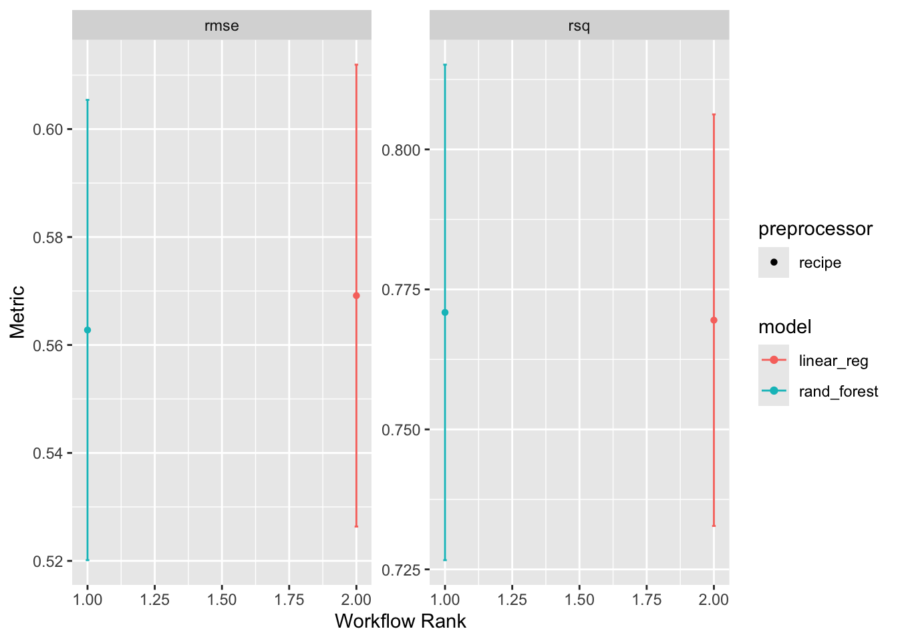
rank_results(wf, rank_metric = "rsq", select_best = TRUE)# A tibble: 4 × 9
wflow_id .config .metric mean std_err n preprocessor model rank
<chr> <chr> <chr> <dbl> <dbl> <int> <chr> <chr> <int>
1 recipe_rand_fore… pre0_m… rmse 0.563 0.0259 10 recipe rand… 1
2 recipe_rand_fore… pre0_m… rsq 0.771 0.0269 10 recipe rand… 1
3 recipe_linear_reg pre0_m… rmse 0.569 0.0260 10 recipe line… 2
4 recipe_linear_reg pre0_m… rsq 0.770 0.0223 10 recipe line… 2Overall it seems the random forest model is outperforming the linear model. This is not surprising given the non-linear relationship between the predictors and the outcome :)
Final Model
The workflow-set comparison above told us the random forest wins. Let’s fit it once more on the full training set so we have a single model object to interrogate:
final <- workflow() |>
add_recipe(rec) |>
add_model(rf_model) |>
fit(data = camels_train)Evaluation
A proper evaluation has three parts:
- Variable importance — which predictors is the model actually using? Week 5-2 introduced
vip::vip()paired withextract_fit_parsnip()to pull the underlying model object out of a fitted workflow. - Test-set metrics — apply the trained model to data it has never seen.
- A predicted-vs-observed plot — the visual sanity check; the 1:1 line should run through the cloud.
# Variable importance (Week 5-2 pattern)
final |>
extract_fit_parsnip() |>
vip::vip()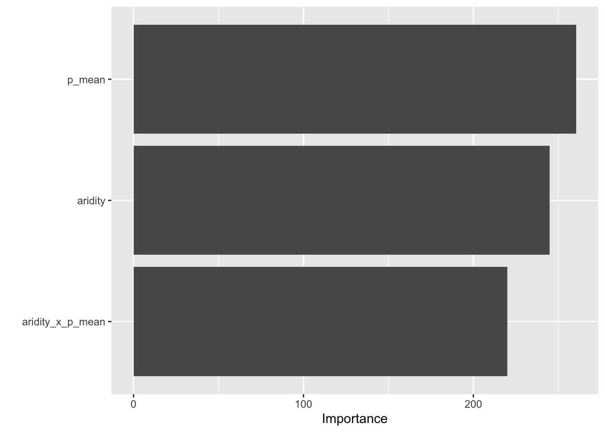
# Predictions on the test set
rf_data <- augment(final, new_data = camels_test)
# Regression metrics (rmse, rsq, mae by default)
metrics(rf_data, truth = logQmean, estimate = .pred)# A tibble: 3 × 3
.metric .estimator .estimate
<chr> <chr> <dbl>
1 rmse standard 0.593
2 rsq standard 0.735
3 mae standard 0.366ggplot(rf_data, aes(x = logQmean, y = .pred, colour = aridity)) +
scale_color_viridis_c() +
geom_point() +
# 1:1 line — perfect prediction
geom_abline(linetype = 2) +
# Actual regression line for contrast
geom_smooth(method = "lm", col = 'red', linetype = 2, se = FALSE) +
theme_linedraw() +
labs(title = "Random Forest Model: Observed vs Predicted",
x = "Observed Log Mean Flow",
y = "Predicted Log Mean Flow",
color = "Aridity")`geom_smooth()` using formula = 'y ~ x'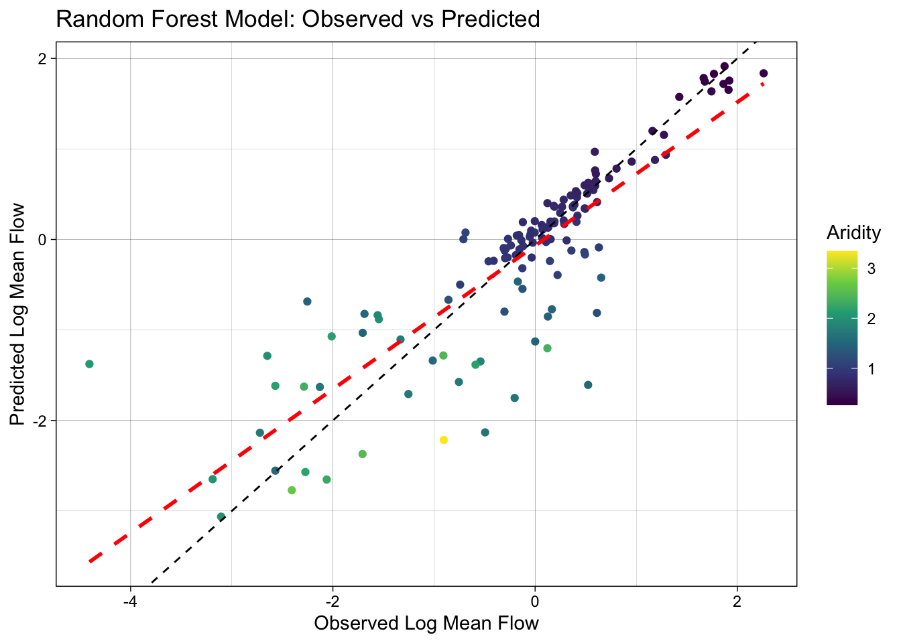
That’s the minimum end-to-end loop. Q4 asks you to do the full version: swap in spatial CV, tune the hyperparameters, and close with last_fit() — all patterns the lectures cover in detail.
Question 3: Your Turn!
xgb_model <- boost_tree() |>
set_engine("xgboost") |>
set_mode("regression")
nn_model <- bag_mlp() |>
set_engine("nnet") |>
set_mode("regression")
wf_2 <- workflow_set(list(rec), list(lm_model, rf_model, xgb_model, nn_model)) |>
workflow_map("fit_resamples", resamples = camels_cv)Registered S3 method overwritten by 'butcher':
method from
as.character.dev_topic genericsautoplot(wf_2)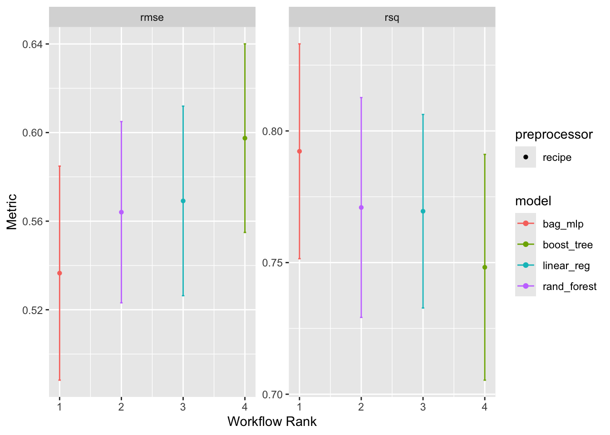
rank_results(wf_2, rank_metric = "rsq", select_best = TRUE)# A tibble: 8 × 9
wflow_id .config .metric mean std_err n preprocessor model rank
<chr> <chr> <chr> <dbl> <dbl> <int> <chr> <chr> <int>
1 recipe_bag_mlp pre0_m… rmse 0.537 0.0294 10 recipe bag_… 1
2 recipe_bag_mlp pre0_m… rsq 0.792 0.0248 10 recipe bag_… 1
3 recipe_rand_fore… pre0_m… rmse 0.564 0.0249 10 recipe rand… 2
4 recipe_rand_fore… pre0_m… rsq 0.771 0.0254 10 recipe rand… 2
5 recipe_linear_reg pre0_m… rmse 0.569 0.0260 10 recipe line… 3
6 recipe_linear_reg pre0_m… rsq 0.770 0.0223 10 recipe line… 3
7 recipe_boost_tree pre0_m… rmse 0.597 0.0259 10 recipe boos… 4
8 recipe_boost_tree pre0_m… rsq 0.748 0.0261 10 recipe boos… 4#I would choose the neural network model as it ranks first for rmsq and rsq. While this is the top ranked choice, the random forest model rmsq and rsq values fall closely behind and would be a good option as well.Question 4: Build your own
Borrowing from the workflow presented above, build your own complete ML pipeline to predict mean streamflow using the CAMELS dataset.
This question asks you to apply the full toolkit from Week 5 and Week 6: EDA, recipes, workflow sets, spatial cross-validation (CAMELS is a spatial dataset — random CV will flatter your model), hyperparameter tuning, variable importance, and a clean final fit with last_fit(). Q4 is the bulk of the lab — budget time accordingly.
Data prep & EDA
#install.packages("skimr")
#install.packages("visdat")
library(skimr)
library(visdat)
set.seed(48)
skim(camels)| Name | camels |
| Number of rows | 671 |
| Number of columns | 59 |
| _______________________ | |
| Column type frequency: | |
| character | 6 |
| numeric | 53 |
| ________________________ | |
| Group variables | None |
Variable type: character
| skim_variable | n_missing | complete_rate | min | max | empty | n_unique | whitespace |
|---|---|---|---|---|---|---|---|
| gauge_id | 0 | 1.00 | 8 | 8 | 0 | 671 | 0 |
| high_prec_timing | 0 | 1.00 | 3 | 3 | 0 | 4 | 0 |
| low_prec_timing | 0 | 1.00 | 3 | 3 | 0 | 4 | 0 |
| geol_1st_class | 0 | 1.00 | 12 | 31 | 0 | 12 | 0 |
| geol_2nd_class | 138 | 0.79 | 12 | 31 | 0 | 13 | 0 |
| dom_land_cover | 0 | 1.00 | 12 | 38 | 0 | 12 | 0 |
Variable type: numeric
| skim_variable | n_missing | complete_rate | mean | sd | p0 | p25 | p50 | p75 | p100 | hist |
|---|---|---|---|---|---|---|---|---|---|---|
| p_mean | 0 | 1.00 | 3.26 | 1.41 | 0.64 | 2.37 | 3.23 | 3.78 | 8.94 | ▃▇▂▁▁ |
| pet_mean | 0 | 1.00 | 2.79 | 0.55 | 1.90 | 2.34 | 2.69 | 3.15 | 4.74 | ▇▇▅▂▁ |
| p_seasonality | 0 | 1.00 | -0.04 | 0.53 | -1.44 | -0.26 | 0.08 | 0.22 | 0.92 | ▁▂▃▇▂ |
| frac_snow | 0 | 1.00 | 0.18 | 0.20 | 0.00 | 0.04 | 0.10 | 0.22 | 0.91 | ▇▂▁▁▁ |
| aridity | 0 | 1.00 | 1.06 | 0.62 | 0.22 | 0.70 | 0.86 | 1.27 | 5.21 | ▇▂▁▁▁ |
| high_prec_freq | 0 | 1.00 | 20.93 | 4.55 | 7.90 | 18.50 | 22.00 | 24.23 | 32.70 | ▂▃▇▇▁ |
| high_prec_dur | 0 | 1.00 | 1.35 | 0.19 | 1.08 | 1.21 | 1.28 | 1.44 | 2.09 | ▇▅▂▁▁ |
| low_prec_freq | 0 | 1.00 | 254.65 | 35.12 | 169.90 | 232.70 | 255.85 | 278.92 | 348.70 | ▂▅▇▅▁ |
| low_prec_dur | 0 | 1.00 | 5.95 | 3.20 | 2.79 | 4.24 | 4.95 | 6.70 | 36.51 | ▇▁▁▁▁ |
| glim_1st_class_frac | 0 | 1.00 | 0.79 | 0.20 | 0.30 | 0.61 | 0.83 | 1.00 | 1.00 | ▁▃▃▃▇ |
| glim_2nd_class_frac | 0 | 1.00 | 0.16 | 0.14 | 0.00 | 0.00 | 0.14 | 0.27 | 0.49 | ▇▃▃▂▁ |
| carbonate_rocks_frac | 0 | 1.00 | 0.12 | 0.26 | 0.00 | 0.00 | 0.00 | 0.04 | 1.00 | ▇▁▁▁▁ |
| geol_porostiy | 3 | 1.00 | 0.13 | 0.07 | 0.01 | 0.07 | 0.13 | 0.19 | 0.28 | ▇▆▇▇▂ |
| geol_permeability | 0 | 1.00 | -13.89 | 1.18 | -16.50 | -14.77 | -13.96 | -13.00 | -10.90 | ▂▅▇▅▂ |
| soil_depth_pelletier | 0 | 1.00 | 10.87 | 16.24 | 0.27 | 1.00 | 1.23 | 12.89 | 50.00 | ▇▁▁▁▁ |
| soil_depth_statsgo | 0 | 1.00 | 1.29 | 0.27 | 0.40 | 1.11 | 1.46 | 1.50 | 1.50 | ▁▁▂▂▇ |
| soil_porosity | 0 | 1.00 | 0.44 | 0.02 | 0.37 | 0.43 | 0.44 | 0.46 | 0.68 | ▃▇▁▁▁ |
| soil_conductivity | 0 | 1.00 | 1.74 | 1.52 | 0.45 | 0.93 | 1.35 | 1.93 | 13.96 | ▇▁▁▁▁ |
| max_water_content | 0 | 1.00 | 0.53 | 0.15 | 0.09 | 0.43 | 0.56 | 0.64 | 1.05 | ▁▅▇▃▁ |
| sand_frac | 0 | 1.00 | 36.47 | 15.63 | 8.18 | 25.44 | 35.27 | 44.46 | 91.98 | ▅▇▅▁▁ |
| silt_frac | 0 | 1.00 | 33.86 | 13.25 | 2.99 | 23.95 | 34.06 | 43.64 | 67.77 | ▂▆▇▆▁ |
| clay_frac | 0 | 1.00 | 19.89 | 9.32 | 1.85 | 14.00 | 18.66 | 25.42 | 50.35 | ▃▇▅▂▁ |
| water_frac | 0 | 1.00 | 0.10 | 0.94 | 0.00 | 0.00 | 0.00 | 0.00 | 19.35 | ▇▁▁▁▁ |
| organic_frac | 0 | 1.00 | 0.59 | 3.84 | 0.00 | 0.00 | 0.00 | 0.00 | 57.86 | ▇▁▁▁▁ |
| other_frac | 0 | 1.00 | 9.82 | 16.83 | 0.00 | 0.00 | 1.31 | 11.74 | 99.38 | ▇▁▁▁▁ |
| gauge_lat | 0 | 1.00 | 39.24 | 5.21 | 27.05 | 35.70 | 39.25 | 43.21 | 48.82 | ▂▃▇▆▅ |
| gauge_lon | 0 | 1.00 | -95.79 | 16.21 | -124.39 | -110.41 | -92.78 | -81.77 | -67.94 | ▆▃▇▇▅ |
| elev_mean | 0 | 1.00 | 759.42 | 786.00 | 10.21 | 249.67 | 462.72 | 928.88 | 3571.18 | ▇▂▁▁▁ |
| slope_mean | 0 | 1.00 | 46.20 | 47.12 | 0.82 | 7.43 | 28.80 | 73.17 | 255.69 | ▇▂▂▁▁ |
| area_gages2 | 0 | 1.00 | 792.62 | 1701.95 | 4.03 | 122.28 | 329.68 | 794.30 | 25791.04 | ▇▁▁▁▁ |
| area_geospa_fabric | 0 | 1.00 | 808.08 | 1709.85 | 4.10 | 127.98 | 340.70 | 804.50 | 25817.78 | ▇▁▁▁▁ |
| frac_forest | 0 | 1.00 | 0.64 | 0.37 | 0.00 | 0.28 | 0.81 | 0.97 | 1.00 | ▃▁▁▂▇ |
| lai_max | 0 | 1.00 | 3.22 | 1.52 | 0.37 | 1.81 | 3.37 | 4.70 | 5.58 | ▅▆▃▅▇ |
| lai_diff | 0 | 1.00 | 2.45 | 1.33 | 0.15 | 1.20 | 2.34 | 3.76 | 4.83 | ▇▇▇▆▇ |
| gvf_max | 0 | 1.00 | 0.72 | 0.17 | 0.18 | 0.61 | 0.78 | 0.86 | 0.92 | ▁▁▂▃▇ |
| gvf_diff | 0 | 1.00 | 0.32 | 0.15 | 0.03 | 0.19 | 0.32 | 0.46 | 0.65 | ▃▇▅▇▁ |
| dom_land_cover_frac | 0 | 1.00 | 0.81 | 0.18 | 0.31 | 0.65 | 0.86 | 1.00 | 1.00 | ▁▂▃▃▇ |
| root_depth_50 | 24 | 0.96 | 0.18 | 0.03 | 0.12 | 0.17 | 0.18 | 0.19 | 0.25 | ▃▃▇▂▂ |
| root_depth_99 | 24 | 0.96 | 1.83 | 0.30 | 1.50 | 1.52 | 1.80 | 2.00 | 3.10 | ▇▃▂▁▁ |
| q_mean | 1 | 1.00 | 1.49 | 1.54 | 0.00 | 0.63 | 1.13 | 1.75 | 9.69 | ▇▁▁▁▁ |
| runoff_ratio | 1 | 1.00 | 0.39 | 0.23 | 0.00 | 0.24 | 0.35 | 0.51 | 1.36 | ▆▇▂▁▁ |
| slope_fdc | 1 | 1.00 | 1.24 | 0.51 | 0.00 | 0.90 | 1.28 | 1.63 | 2.50 | ▂▅▇▇▁ |
| baseflow_index | 0 | 1.00 | 0.49 | 0.16 | 0.01 | 0.40 | 0.50 | 0.60 | 0.98 | ▁▃▇▅▁ |
| stream_elas | 1 | 1.00 | 1.83 | 0.78 | -0.64 | 1.32 | 1.70 | 2.23 | 6.24 | ▁▇▃▁▁ |
| q5 | 1 | 1.00 | 0.17 | 0.27 | 0.00 | 0.01 | 0.08 | 0.22 | 2.42 | ▇▁▁▁▁ |
| q95 | 1 | 1.00 | 5.06 | 4.94 | 0.00 | 2.07 | 3.77 | 6.29 | 31.82 | ▇▂▁▁▁ |
| high_q_freq | 1 | 1.00 | 25.74 | 29.07 | 0.00 | 6.41 | 15.10 | 35.79 | 172.80 | ▇▂▁▁▁ |
| high_q_dur | 1 | 1.00 | 6.91 | 10.07 | 0.00 | 1.82 | 2.85 | 7.55 | 92.56 | ▇▁▁▁▁ |
| low_q_freq | 1 | 1.00 | 107.62 | 82.24 | 0.00 | 37.44 | 96.00 | 162.14 | 356.80 | ▇▆▅▂▁ |
| low_q_dur | 1 | 1.00 | 22.28 | 21.66 | 0.00 | 10.00 | 15.52 | 26.91 | 209.88 | ▇▁▁▁▁ |
| zero_q_freq | 1 | 1.00 | 0.03 | 0.11 | 0.00 | 0.00 | 0.00 | 0.00 | 0.97 | ▇▁▁▁▁ |
| hfd_mean | 1 | 1.00 | 182.52 | 33.53 | 112.25 | 160.16 | 173.77 | 204.05 | 287.75 | ▂▇▃▂▁ |
| logQmean | 1 | 1.00 | -0.11 | 1.17 | -5.39 | -0.46 | 0.12 | 0.56 | 2.27 | ▁▁▂▇▂ |
vis_dat(camels)
#The data contains six different charcter variable types and 53 different numeric variable types. The main variables with missing values are geol_2nd_class, geol_porosity, root_depth_50, and root_depth_99. I will look to exclude variables missing values from the recipe for the model and intersted in looking at aridity, p_mean, pet_mean, frac_forest, soil_porosity, and elev_mean.
ggplot(camels, aes(x = q_mean)) +
geom_histogram(bins = 40) +
theme_linedraw() +
labs(title = "Distribution of q_mean", x = "q_mean", y = "Count")Warning: Removed 1 row containing non-finite outside the scale range
(`stat_bin()`).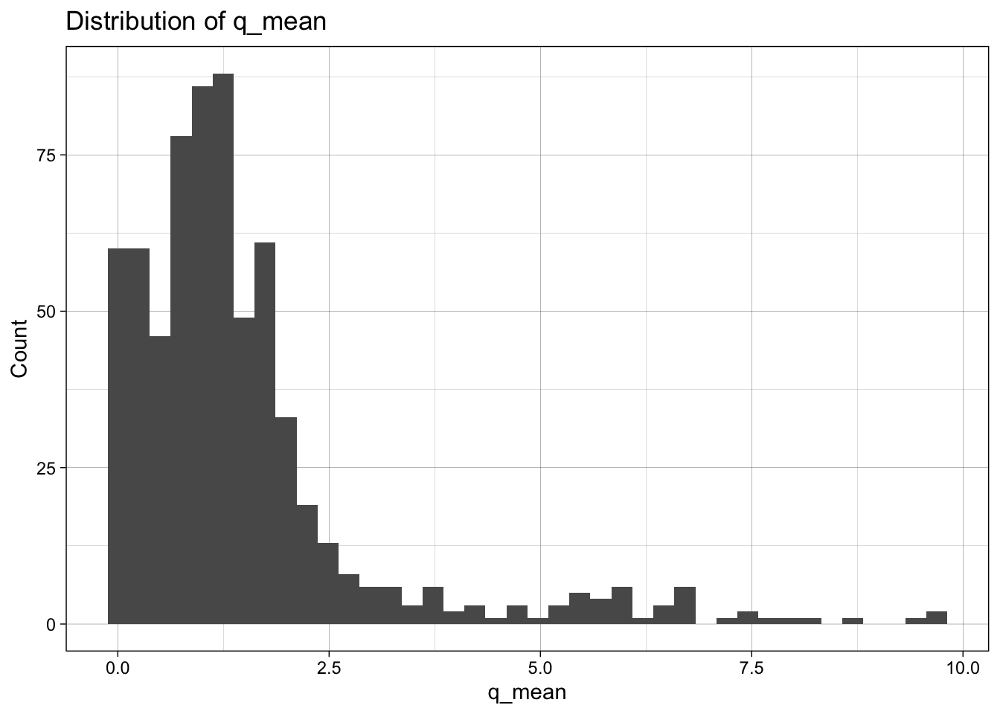
#The q_mean is right skewed so I'll use log of q_mean instead.
ggplot(camels, aes(x = logQmean)) +
geom_histogram(bins = 40)+
theme_linedraw() +
labs(title = "Distribution of log(q_mean)", x = "log(q_mean)", y = "Count")Warning: Removed 1 row containing non-finite outside the scale range
(`stat_bin()`).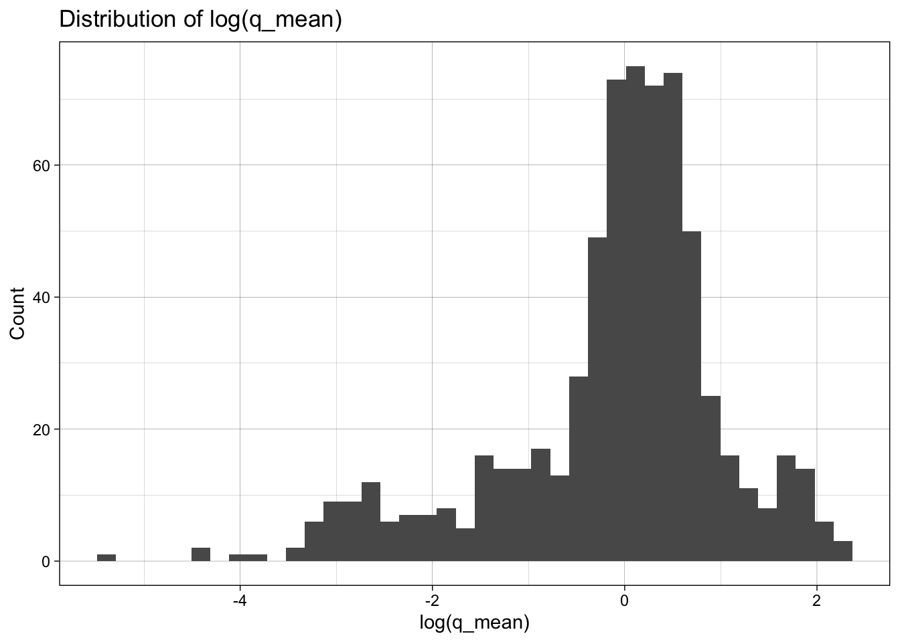
#This is still skewed a bit but now towards the left but is more symmetrical.
camels |>
select(aridity, p_mean, pet_mean, frac_forest, soil_porosity, elev_mean) |>
pivot_longer(everything()) |>
ggplot(aes(x = value)) +
geom_histogram(bins = 40) +
facet_wrap(~name, scales = "free")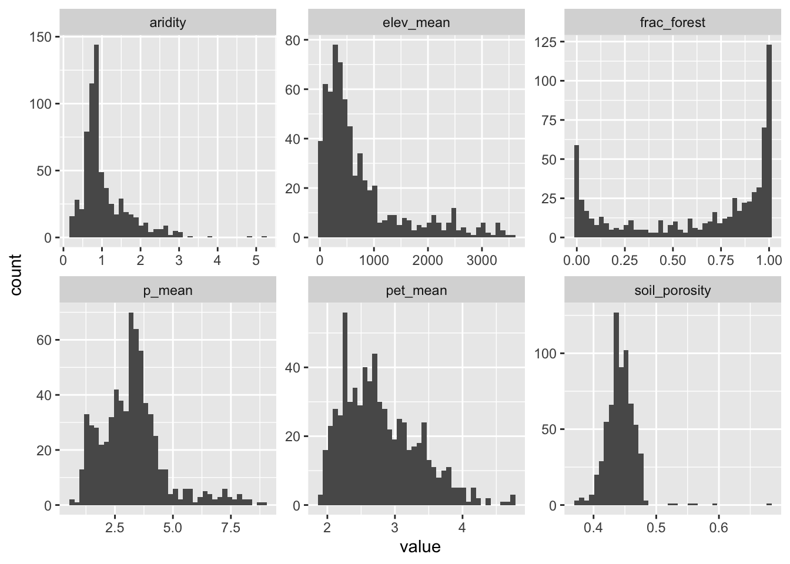
#Most of the variables are skewed but aridity and soil prossity have the greatest skew, to the right, and therefore will need to log transform them.camels_split2 <- initial_split(camels, prop = 0.75, strata = aridity)
camels_train2 <- training(camels_split2)
camels_test2 <- testing(camels_split2)Recipe
rec2 <- recipe(logQmean ~ aridity + p_mean + pet_mean + frac_forest + soil_porosity +
elev_mean, data = camels_train2) |>
step_log(aridity, p_mean, pet_mean, elev_mean,
offset = 1) |>
step_normalize(all_numeric_predictors()) |>
step_interact(terms = ~ aridity:p_mean) |>
step_naomit(all_predictors(), all_outcomes())
#The recipe I made includes aridity, p_mean, pet_mean, frac_forest, soil_porosity, and elev_mean. I chose these variables for the recipe since they all play a role into precipitation and it's retention in soils. The following variables were log transformed due to skews when they were visualized in the previous step: aridity, p_mean, pet_mean, elev_mean. I used step_normalize to normalize the data since the variables are across varying scales.I also used step_naomit to remove the missing data from logQmean found in the skim step.Define 3 models
rf_model2 <- rand_forest() |>
set_engine("ranger", importance = "impurity") |>
set_mode("regression")
#The random forest model is good for classification and regression tasks and can help to improve accuracy through it's decision tree matrix.
nn_model2 <- bag_mlp() |>
set_engine("nnet") |>
set_mode("regression")
#The neural network model allows for pattern recognition and prediction.
lm_model2 <- linear_reg() |>
set_engine("lm") |>
set_mode("regression")
#The linear regression model is a common model used to assess environmental data as it evaluates one variable across one, or many, others.Workflow set — compare with honest CV
With your preprocessing steps and models defined, build a workflow_set and compare the models across resamples. Because CAMELS basins are spatially distributed, a random vfold_cv can over-state performance if your model leans on geographic proximity — the Week 5-2 deck walks through this carefully, including when the gap is real and when it isn’t.
library(sf)Linking to GEOS 3.13.0, GDAL 3.8.5, PROJ 9.5.1; sf_use_s2() is TRUE#install.packages("spatialsample")
library(spatialsample)
camels_cv2 <- vfold_cv(camels_train2, v = 10)
camels_sf <- camels_train2 |>
st_as_sf(coords = c("gauge_lon", "gauge_lat"), crs = 4326)
camels_spatial_cv <- spatial_block_cv(camels_sf, v = 10)
wf_3 <- workflow_set(
preproc = list(rec2),
models = list(
neural_net = nn_model2,
rand_forest = rf_model2,
linear_reg = lm_model2))
wf_random <- wf_3 |>
workflow_map("fit_resamples", resamples = camels_cv2)
wf_spatial <- wf_3 |>
workflow_map("fit_resamples", resamples = camels_spatial_cv)
autoplot(wf_random)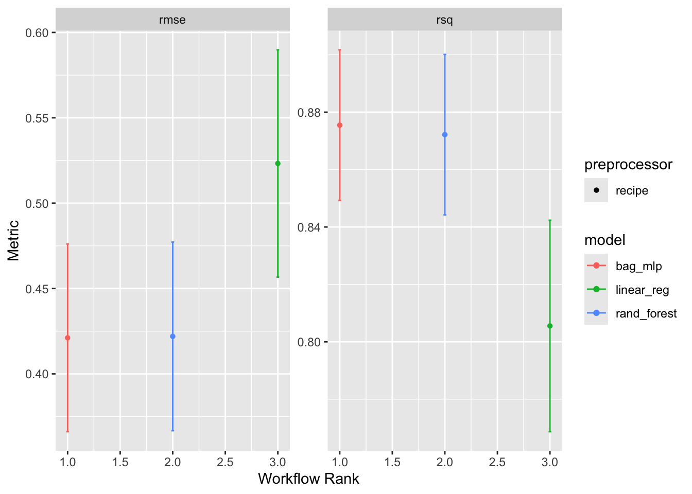
autoplot(wf_spatial)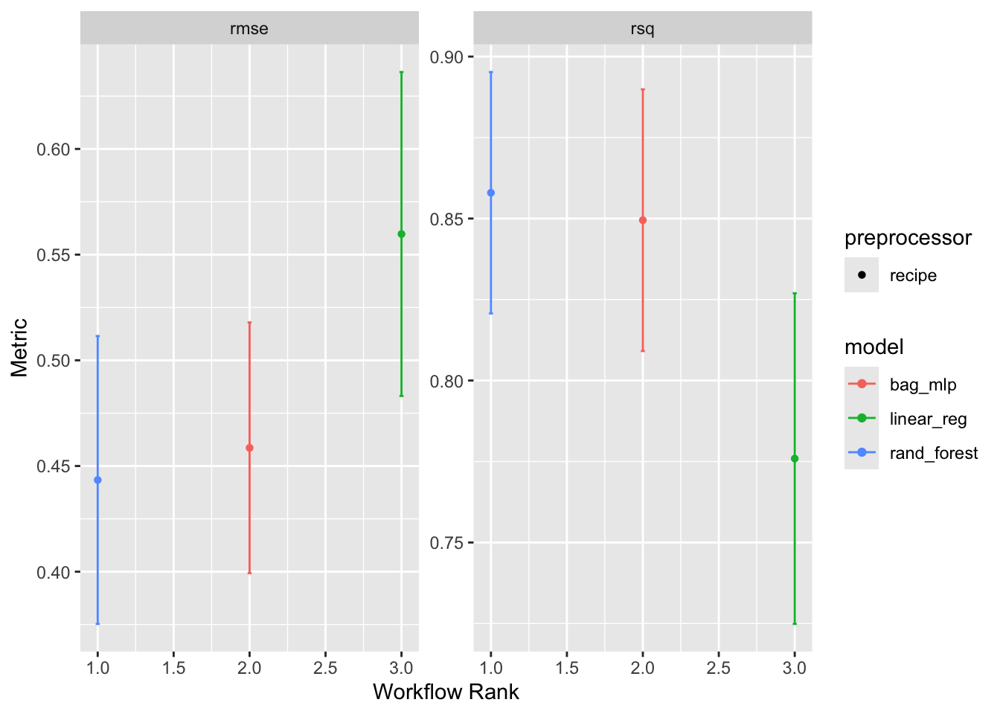
rank_results(wf_random, rank_metric = "rsq", select_best = TRUE)# A tibble: 6 × 9
wflow_id .config .metric mean std_err n preprocessor model rank
<chr> <chr> <chr> <dbl> <dbl> <int> <chr> <chr> <int>
1 recipe_neural_net pre0_m… rmse 0.421 0.0334 10 recipe bag_… 1
2 recipe_neural_net pre0_m… rsq 0.875 0.0159 10 recipe bag_… 1
3 recipe_rand_fore… pre0_m… rmse 0.422 0.0336 10 recipe rand… 2
4 recipe_rand_fore… pre0_m… rsq 0.872 0.0170 10 recipe rand… 2
5 recipe_linear_reg pre0_m… rmse 0.523 0.0405 10 recipe line… 3
6 recipe_linear_reg pre0_m… rsq 0.806 0.0224 10 recipe line… 3rank_results(wf_spatial, rank_metric = "rsq", select_best = TRUE)# A tibble: 6 × 9
wflow_id .config .metric mean std_err n preprocessor model rank
<chr> <chr> <chr> <dbl> <dbl> <int> <chr> <chr> <int>
1 recipe_rand_fore… pre0_m… rmse 0.443 0.0414 10 recipe rand… 1
2 recipe_rand_fore… pre0_m… rsq 0.858 0.0227 10 recipe rand… 1
3 recipe_neural_net pre0_m… rmse 0.459 0.0361 10 recipe bag_… 2
4 recipe_neural_net pre0_m… rsq 0.849 0.0246 10 recipe bag_… 2
5 recipe_linear_reg pre0_m… rmse 0.560 0.0466 10 recipe line… 3
6 recipe_linear_reg pre0_m… rsq 0.776 0.0310 10 recipe line… 3#The neural net was ranked highest in both the random cv and the spatial cv, with the random cv rsq value dropping 0.03 from random cv to spatial cv. The random forest ranked second and the linear regression was in third for both workflows. The rsq values are generally 0.03 lower from the random cv to the spatial cv for the random forest and linear regression as well. The gap is small and therefore indicates that the predictors carry transferrable signal. Since the gap between the random and the spatial is small across all model types it is possible to use either, though the random cv is slighly better.Tune the best model
nn_tune <- bag_mlp(
hidden_units = tune(),
penalty = tune()) |>
set_engine("nnet") |>
set_mode("regression")
#I tuned hidden_units since this controls the complexity of the model. I also chose to tune penalty since this parameter controls the number of iterations that the model will run for when its training.
nn_grid <- grid_space_filling(
hidden_units(range = c(4, 64)),
penalty(range = c(-4, 0)),
size = 20)
#I chose grid_space_filling to evenly distribute the size.
nn_tune_wf <- workflow() |>
add_recipe(rec2) |>
add_model(nn_tune)
nn_tune_res <- tune_grid(
nn_tune_wf,resamples = camels_spatial_cv, grid = nn_grid,
control = control_grid(save_pred = TRUE))
autoplot(nn_tune_res)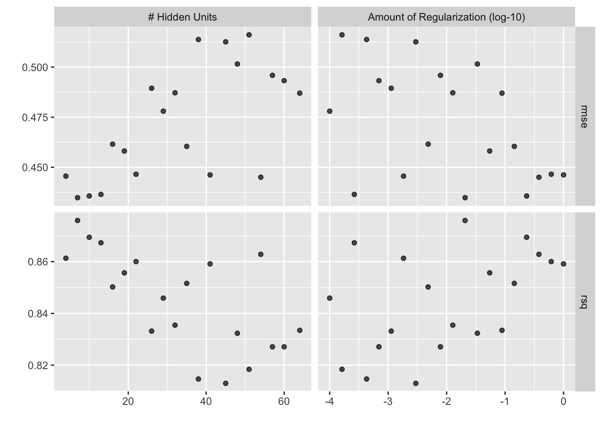
show_best(nn_tune_res, metric = "rsq")# A tibble: 5 × 8
hidden_units penalty .metric .estimator mean n std_err .config
<int> <dbl> <chr> <chr> <dbl> <int> <dbl> <chr>
1 7 0.0207 rsq standard 0.876 10 0.0158 pre0_mod02_post0
2 10 0.234 rsq standard 0.869 10 0.0206 pre0_mod03_post0
3 13 0.000264 rsq standard 0.867 10 0.0196 pre0_mod04_post0
4 54 0.379 rsq standard 0.863 10 0.0229 pre0_mod17_post0
5 4 0.00183 rsq standard 0.861 10 0.0189 pre0_mod01_post0#This model did not seem to be sensitive to the two hyperperameters and the top results shows little difference among their mean r2 value (0.847 - 0.850). The hidden_units parameter and the penalty parameter have a wide spread for their values, with hidden ranging from 4-22 as the top five and penalty ranging from 0.00183-0.616 as the top five though there is little effect on the performance across these. The optimal choices are 10 hidden units and 0.234 penalty.
best_nn <- select_best(nn_tune_res, metric = "rsq")Variable importance
nn_vip <- workflow() |>
add_recipe(rec2) |>
add_model(nn_model2) |>
finalize_workflow(best_nn) |>
fit(data = camels_train2)
#nn_vip |>
# extract_fit_parsnip() |>
# vip()
#this model coud not provide VIP
final_wf <- nn_tune_wf |>
finalize_workflow(best_nn)
final_fit <- final_wf |>
fit(data = camels_train2)
prepped_train <- rec2 |>
prep() |>
bake(new_data = camels_train2)
pred_wrapper <- function(object, newdata) {
predict(object, new_data = newdata)$.pred}
final_fit |>
extract_fit_parsnip() |>
vip(method = "permute", target = "logQmean", metric = "rsq", train = prepped_train,
pred_wrapper = pred_wrapper) +
labs(title = "VIP")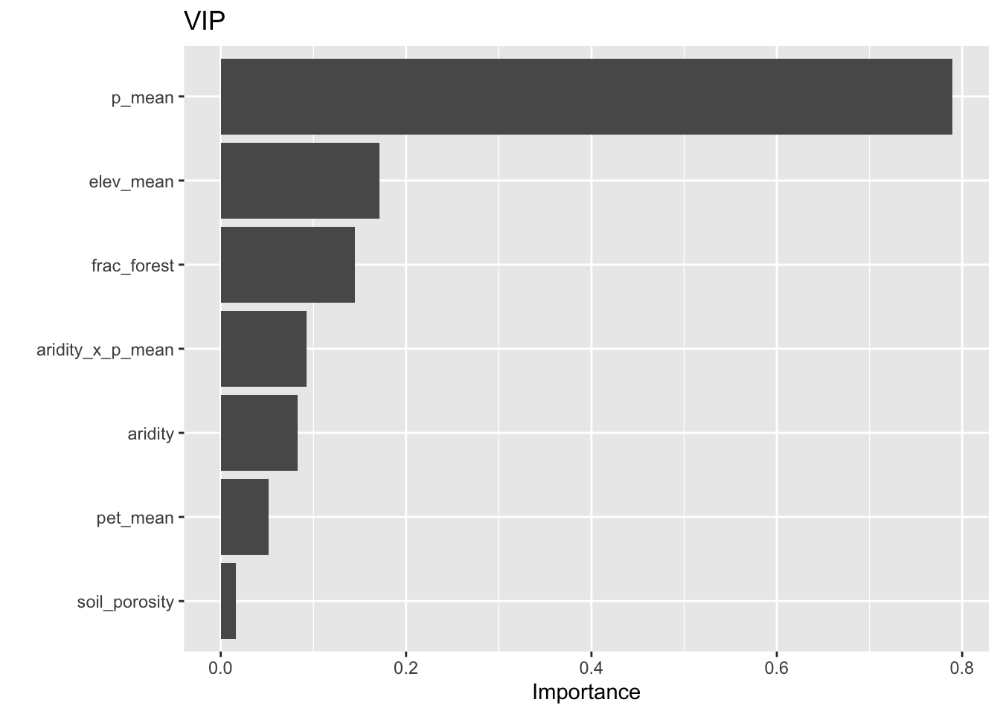
#The variable with the highest permuatation importance is p_mean at 0.6 with elev_mean and aridity importance well below this predictor at approximately 0.18. This indicates that precip is the top predictor for flow levels and that elevation and aridity are also closely linked. This is understandable as precip is more likely as elevation increases and aridity certainly impacts water availability for flow.Final fit & evaluate
Use the canonical tidymodels closing move (Week 6-1, The final fit!):
final_wf2 <- nn_tune_wf |>
finalize_workflow(best_nn)
final_fit2 <- last_fit(final_wf2, split = camels_split2)
collect_metrics(final_fit2)# A tibble: 2 × 4
.metric .estimator .estimate .config
<chr> <chr> <dbl> <chr>
1 rmse standard 0.306 pre0_mod0_post0
2 rsq standard 0.930 pre0_mod0_post0final_preds <- collect_predictions(final_fit2)
ggplot(final_preds, aes(x = logQmean, y = .pred,
color = camels_test2$aridity)) +
geom_point() +
geom_abline(linetype = 1, linewidth = 1) +
scale_color_viridis_c(option = "plasma", name = "Aridity") +
theme_linedraw() +
labs(title = "Neural Network: Observed vs Predicted (Test Set)",
x = "Observed log(q_mean)",
y = "Predicted log(q_mean)")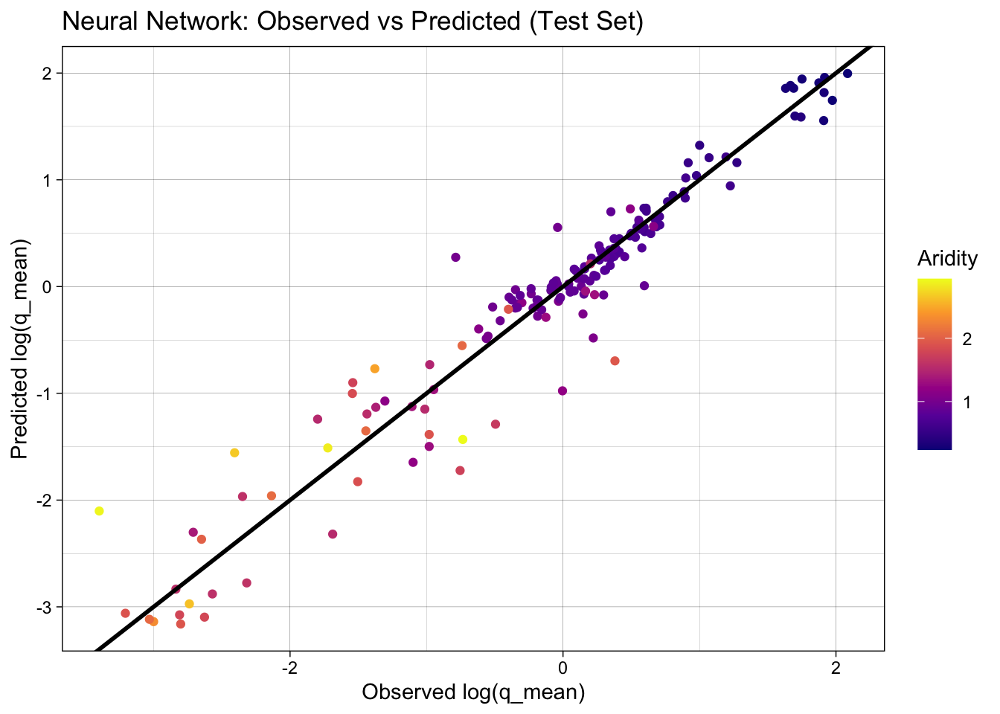
#These results show that as aridity decreases, there is a tighter correlation than for areas with higher aridity values. This indicates that there is an over-prediction at in higher aridity areas potentially due to a lack of representative data. I would next investigate low flows and high flows to fine tune the model since this will provide the whole scale of flow values.